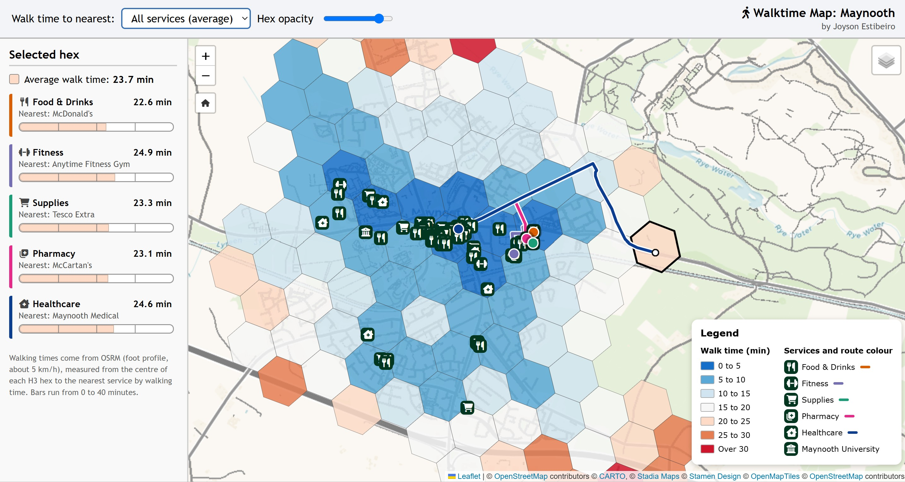

Project Description:
Interactive web map showing how far a neighbourhood in Maynooth is, on foot, from five kinds of essential/everyday services: Food & Drinks, Fitness, Supplies, Pharmacy and Healthcare (GP).
Pick a service (or the average of all five) to colour the hexes by walking time. Click a hex to see the time and nearest service for each category, and to watch the walking route to the nearest one being traced.
Tech Stack:
Data Sources:
OpenStreetMap
Team Members:
Joyson Estibeiro
Affiliation:
Personal Project
Team Members:
Joyson Estibeiro
Affiliation:
Personal Project